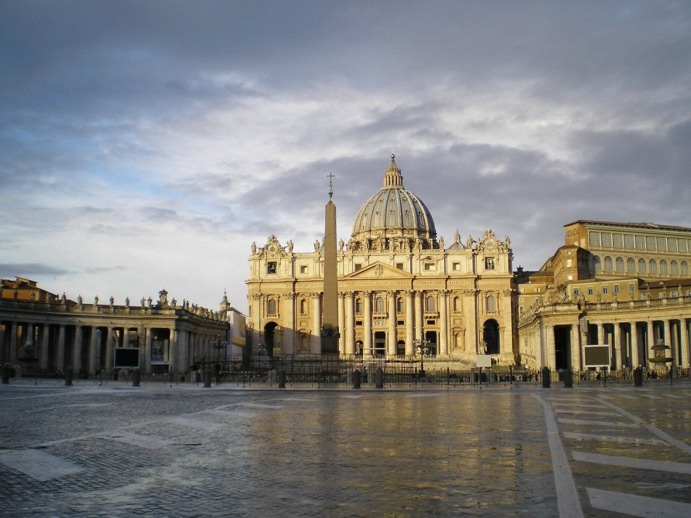

Roma
Cidade Eterna
Roma é conhecida como a “Cidade Eterna” porque nela o tempo parece ter parado há séculos. Seus monumentos e as ruínas de imponentes edifícios fazem com que um passeio por suas ruas se torne uma viagem no tempo à época de máximo esplendor da capital.

Principais Pontos Turisticos
Anfiteatro Flaviano
Um dos ícones arqueológicos – e turísticos – mais famosos do mundo, o Coliseu de Roma, o maior anfiteatro da cidade, começou a ser construído no ano 72 d. C., pelo imperador Vespasiano, para ser inaugurado oito anos mais tarde por seu filho Tito. Viria a se tornar o grande símbolo do Império Romano com sua descomunal arena que chegou a comportar 70 mil pessoas. Elas tomavam assento para acompanhar lutas entre gladiadores, massacres entre animais ferozes, extermínios humanos e até batalhas navais, viabilizadas por toneladas de litros de água importadas de aquedutos. Há séculos as bárbaras orgias não fazem mais parte da programação, mas uma visita ao Coliseum, uma das Sete maravilhas do Mundo, continua a fazer o queixo de qualquer um cair.
Vaticano
Epicentro do catolicismo, sede do papado e lugar do túmulo de São Pedro, a igreja mais visitada de Roma, cuja atual versão foi iniciada no século 16, é simplesmente a maior do mundo. Construída sobre as fundações de uma antiga basílica do século 4, que por sua vez encontrava-se sobre as ruínas do Circo de Nero, a igreja supostamente encontra-se junto ao lugar onde o discípulo Pedro foi crucificado de ponta cabeça no ano de 64. Em 324 Constantino aqui ergueu o primeiro templo em homenagem sobre o primeiro dos papas, uma obra que ganho vulto durante os períodos da Renascença e Barroco.
Fórum Romano
O Foro Romano está para Roma mais ou menos como a Acrópoles está para a cidade de Atenas. Centro da cidade durante o Império, o local reunia os edifícios nos quais funcionavam os principais órgãos burocráticos, como os tribunais, além de estabelecimentos comerciais, templos religiosos e redutos boêmios. O que sobrou desses prédios ainda está lá, o que significa um farto cardápio de história e arquitetura a ser degustado ao ar livre, ao pé do Monte Palatino. Entre as principais ruínas se encontram o Arco de Tito, do ano 81 d.C., o Templo de Saturno, do século 5 a.C., e a Basílica Giulia, cujas origens remontam ao ano 54 a.C.. Para uma visita produtiva, vale contratar um guia especializado ou fazer o tour com um livro ilustrativo. Do contrário, a experiência pode ser um tanto frustrante. Com imagens e informações precisas, contando a história de cada ruína, elas deixarão de ser um monte de pedras empilhadas, tornando-se parte fundamental da história ocidental.
Palatino
Localizado a 40 metros de altura sobre o Fórum Romano, o Monte Palatino é a mais central das sete colinas de Roma e compõe uma das partes mais antigas da cidade. Palatino, Domus Flávia Domus Flávia no Monte Palatino Palatino, Hipódromo de Domiciano Hipódromo de Domiciano Palatino, Casa de Augusto Mosaicos da Casa de Augusto O Monte Palatino é considerado o berço da capital italiana e acreditam que já era habitado no ano 1000 a.C. Durante o período republicano, os cidadãos romanos pertencentes à classe alta se instalaram no Monte Palatino construindo luxuosos palácios, dos quais ainda se conservam importantes vestígios.